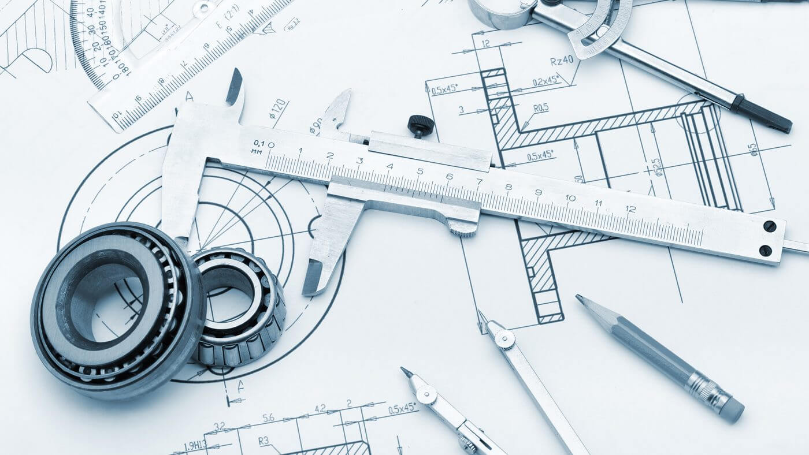
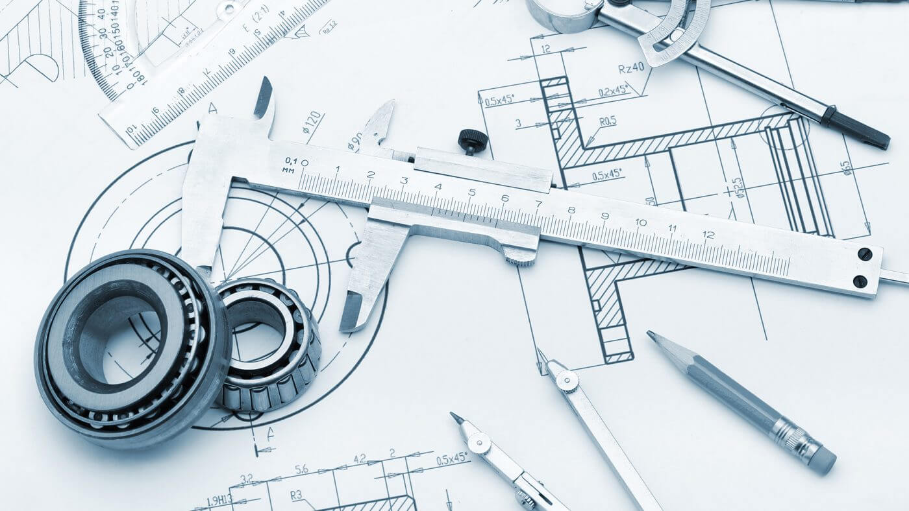
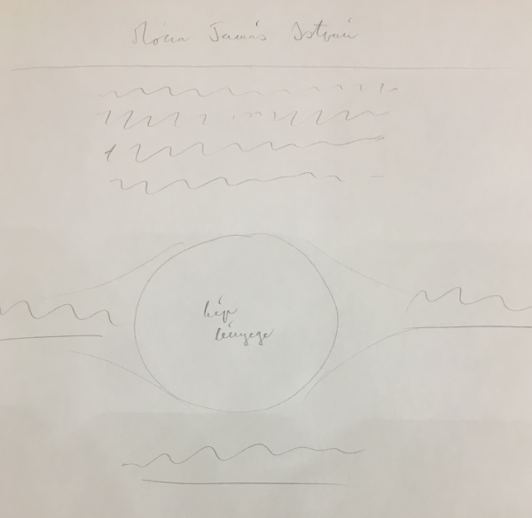
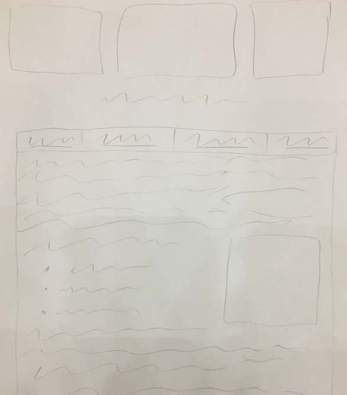

Itt találhatóak a weboldalterveim.
| Főoldal | Magamról | Tanulmányaim | Weboldaltervek |
|

A weboldalam megalkotása során szerencsére sikerült végig a terveimhez igazodnom. Gyakorlatilag nem kellett változtatnom rajta. Az alapgondolatom az volt, hogy a főoldalon legyen valami látványos kép, a többi mellékoldal inkább tartalomfókuszú lett. A mellékelt képeken láthatók a koncepciók, melléjük egy kis magyarázattal. A feladat során a fő nehézséget a HTML kódírás újratanulása okozta. Ugyanis én gimnáziumban informatikaórák keretén belül már tanultam ilyet. Csak sajnos az egyetem előtti két évben már nem volt informatikaórám, így ez a tudás kikopott. Emiatt kicsit újra kellett tanulnom a nyelvet. De szerencsére a munka során vissza-visszatértek az emlékek. Igyekeztem a weboldalamra kellő időt és energiát fordítani, mert szeretek ilyen dolgokat csinálni. Ezúttal mindenképp ügyelni fogok rá, hogy a tudásom tartós maradjon. A munka során nagy segítségemre volt a https://www.w3schools.com/ weboldal. Az főoldalra valami látványos képet akartam tenni, ami egyben tükrözi érdeklődésemet is. Végül emellett a kép mellett döntöttem, amelyen két neutroncsillag ütközik össze, és egyesül, miközben gravitációs hullámokat bocsátanak ki magukból. A kép természetesen csak illusztráció, a gravitációs hullámok nem láthatóak így. Azonban a neutroncsillagok egyesülése egy rendkívül látványos jelenség. A neutroncsillagok már csak a magfizikai hátterük miatt nagyon érdekesek. Ezek a csillagok egykor sokkal nagyobbak voltak, azonban az üzemanyaguk (hidrogén) elfogyasztása után magukba roskadtak. Egy bizonyos tömegtartományban ezek a csillagok a szupernóva robbanás után nem esnek teljesen össze, hanem nagy sebességgel forgó, nagy tömegű csillaggá alakulnak.  A neutroncsillagok a nevüket onnan kapták, hogy kizárólag neutronokból állnak. Ennek oka, hogy a nagymértékű tömegvonzás miatt a csillag szupernóva robbanása után megmaradt (le nem dobott) anyagában az elektronok egyszerűen belepréselődnek a protonokba. Vagyis elektronbefogásos pozitív béta-bomlások sorozata történik, ennek eredménye ez a páratlan csillag. De persze lehetne még mesélni róluk, én csak egy kis ízelítőt adtam ebből. De nagy vonalakban ezek miatt döntöttem emellett a kép mellett. Egy kis bevezető szöveget is írtam magamról az oldal tetején. A különböző oldalakra vezető linkeket pedig igyekeztem úgy elhelyezni, hogy a háttérkép lényege, vagyis az egyesülő neutroncsillagok látszódjanak. A többi oldalra nem gondoltam külön-külön egyedi dolgot tenni. Alapjuk egy téglalap lett, amin egy táblázat van, első sorában a különböző oldalakra vezető fülekkel. A táblázat felett három képpel díszítettem az oldalakat, illetve a szövegbe is illesztettem párat. A szövegben igyekeztem paragrafusokat és listákat is beiktatni, hogy ne legyen túl ömlesztett. A mellékes oldalak:
Minden egybevéve nagyon élveztem a weboldalam megalkotását, kellemes volt feleleveníteni a tudást, amit régebben tanultam. Amikor majd engedi időm, szívesen elmélyednék jobban is ennek a kódolásnak a megismerésében. |
|||